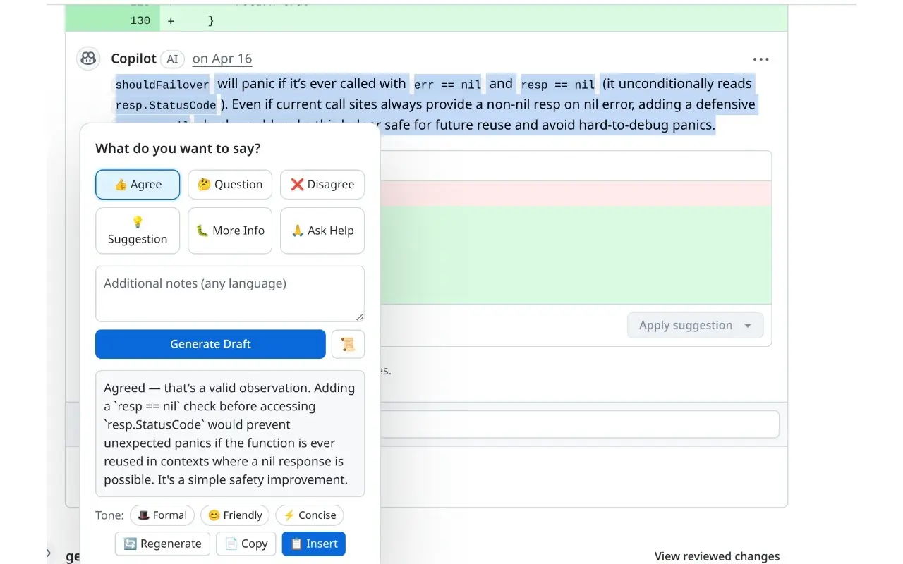

Draft Pilot helps non-native English speakers write fluent, context-aware replies on any website. Right-click, pick your intent, get a polished draft in seconds.

Right-click any input box or press Cmd+Shift+E
Choose from 6 presets (agree, question, disagree...) or type freely in Chinese/English.
AI generates a natural, context-aware English reply. Edit or adjust tone as needed.
One click inserts the draft into the input field. Review and submit.
Auto-detects reply target — selected text, comment container, or full page context via Readability.js.
Extracts issue/PR title, body, and comments automatically. DOM extraction + GitHub API fallback.
6 presets (agree, question, disagree, suggest, add info, ask for help) + free-form input in any language.
Switch between formal, friendly, or concise styles with one click after generation.
Works with OpenAI, Anthropic, DeepSeek, Groq, Cloudflare AI Gateway, local Ollama, and more.
API keys stored locally only. No telemetry, no analytics. Data only goes to your chosen LLM provider.
Optimized for GitHub, but works everywhere — Gmail, Slack, forums, and any site with an input field.